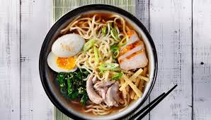

RAMEN

Description
Is a Japanese noodle soup, with a combination of a rich flavoured broth, one of a variety of types of noodle and a selection of meats or vegetables, often topped with a boiled egg.
Ingredients
3 ½ cups chicken broth (such as Swanson Original, Natural Goodness, or Organic Chicken Broth)
½ red bell pepper, cut into 2-inch-long strips
2 green onions, sliced diagonally
1 medium carrot, sliced diagonally
1 stalk celery, sliced diagonally
1 cup cooked, shredded boneless, skinless chicken breast meat
4 ounces uncooked ramen noodles, broken into pieces
Steps
Step 1 :"Combine broth, bell pepper, green onions, carrot, celery, garlic, soy sauce, ginger, and pepper in a 2-quart saucepan over medium-high heat; bring to a boil. "
Step 2 :"Stir chicken and noodles into the pan, reduce the heat to medium, and cook until noodles are tender, about 10 minutes. "